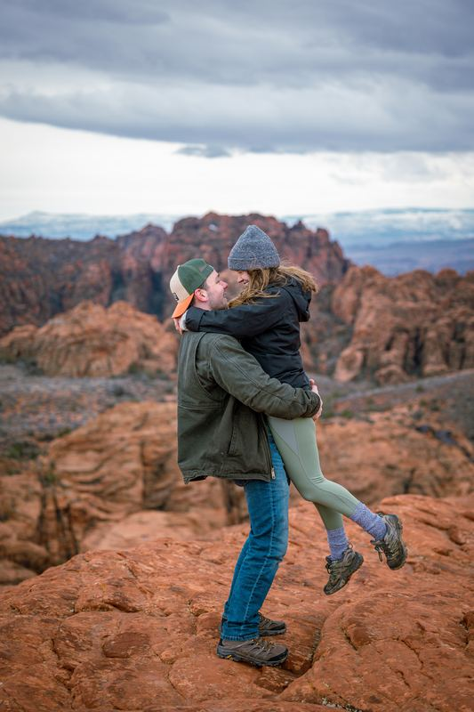
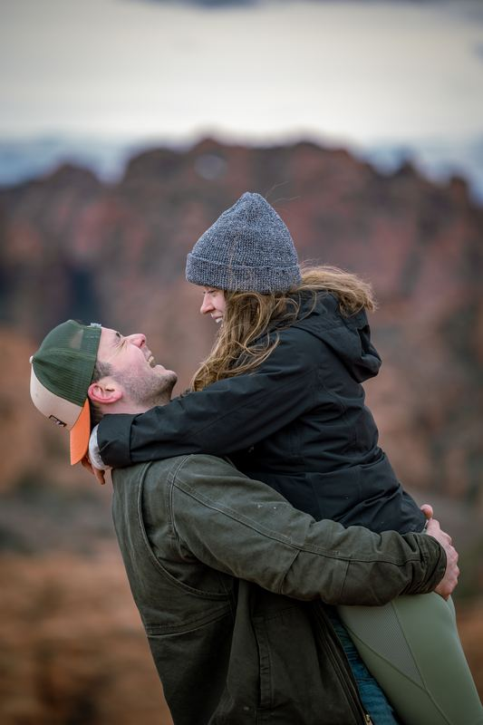
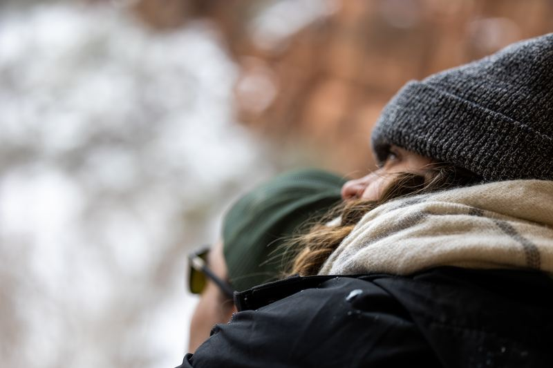

Editorial, unhurried wedding stories. From quiet elopements in Zion to candlelit evenings in Newport, we photograph weddings honestly, the way we hope you'll remember them.



We take a small, deliberate number of bookings each year so every client gets our full attention. Send an inquiry. We'll reply within 48 hours.
Begin Your Inquiry